August 2017
| The Lincoln County Fair is always a
huge deal in our little town, and this year was no exception. It was
a fun time, thankfully not spoiled by the smoke. I was happy that
Eric was in town for the fair as we had a chance to see many friends we
hadn't visited with since last year. |
|
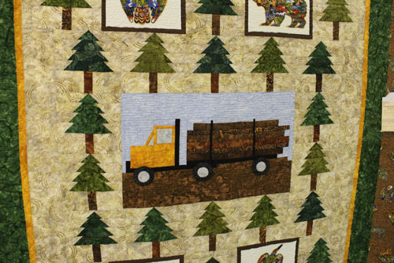 Of course, I always have to stop in the quilt building. Isn't this logging quilt clever? |
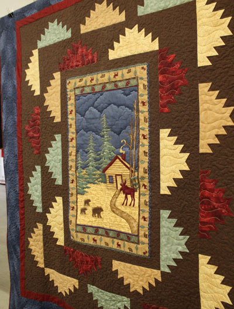 |
| A pretty wildlife quilt, I especially love how they did the clouds | |
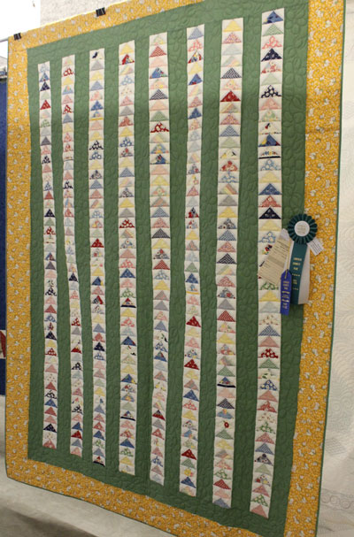 |
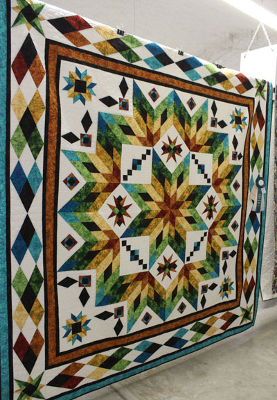 |
| This one looks like so much work, but didn't it turn out just beautiful? | Awesome choice of colors in this amazing quilt. |
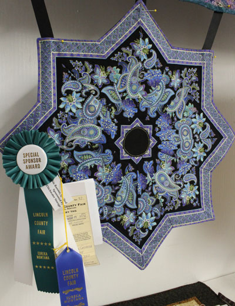 |
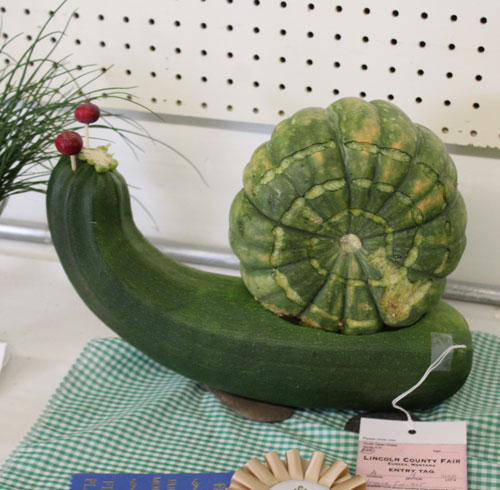 |
| This table topper was the only thing I entered this year, but it won! 1st & a special award. | My favorite veggie display at the fair |
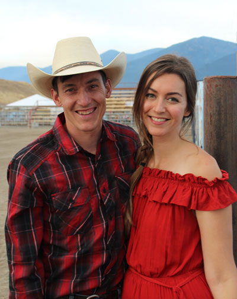 |
|
| What a lovely couple! My pastor Eli and his beautiful wife Leah | Our friend Stella sang the National Anthem as a warm-up for
singing at The Bull Thing the following night. She did a great job! |
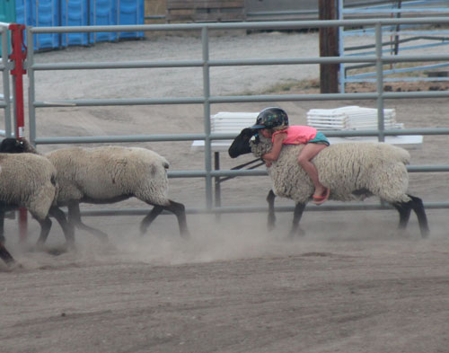 Time for Family Fun Night and the first event, mutton busting.
This little girl had a |
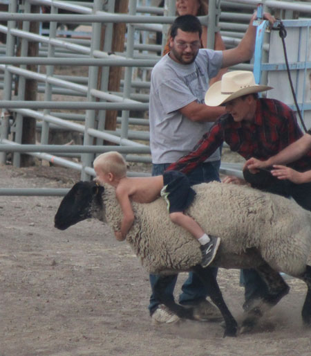 |
| This poor boy had his face whacked by the sheep's neck on every
step, but he hung on like a trooper! The sheep were managed by Pastor Eli and friend Ryan. |
|
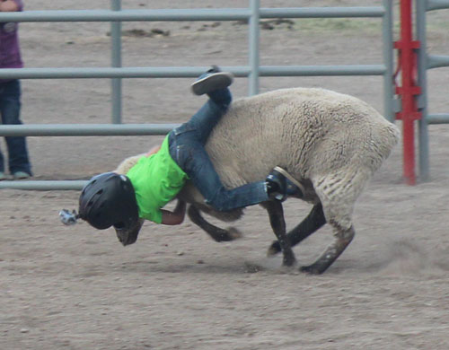 |
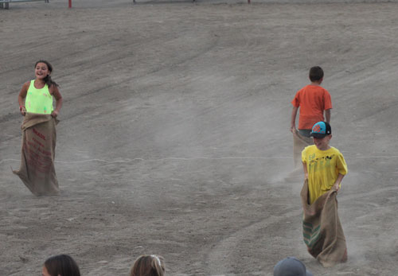 |
| Getting a great Go-Pro video of hitting the dirt at high speed | Next event, sack races, but there really is no race going on. Just jumping in sacks. |
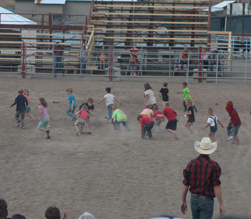 |
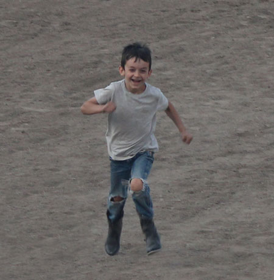 |
| I don't know the official name for this game, but it should be
called, "Ruin Your Socks." The kids' shoes are scattered all over the arena and they race to find them, put them on, and run back. |
Grant, thrilled to have his boots full of dirt. |
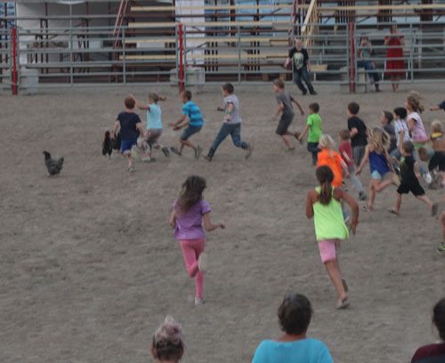 |
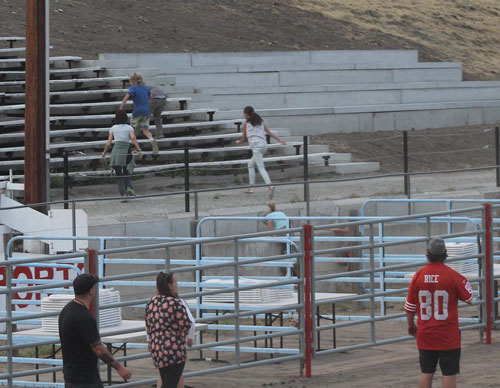 |
| Next comes the race to catch chickens, one of which is worth $10 | An escapee chicken heads for the hills! |
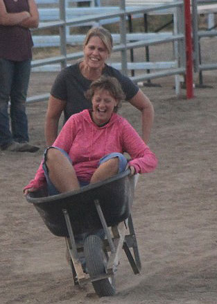 |
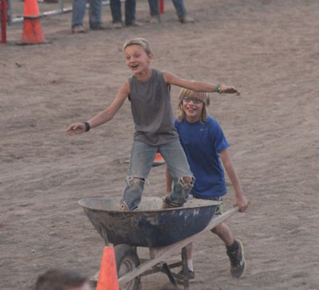 |
| The wheelbarrow races are supposed to have the driver
blindfolded, but Smoky the Bear absconded with the blindfolds, so they improvised. These ladies are friends of mine from church. |
This little boy was crazy bold in doing some surfing
|
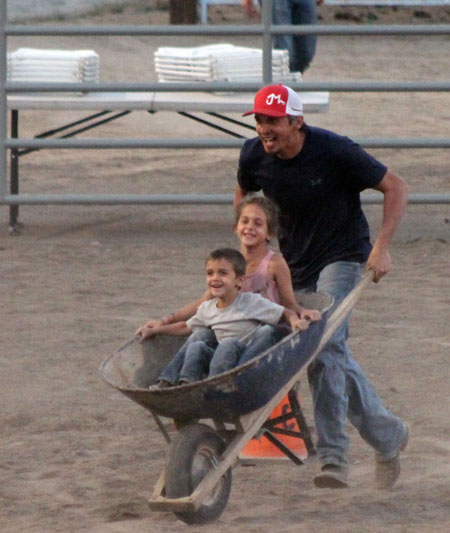 |
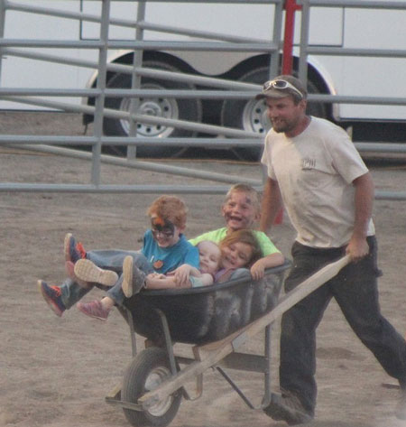 |
| Our friend Marion giving two of his kids such a fun ride, they got him to do it again and again. | This guy has quite a barrow full of kids. With the face
paint and the looks on their faces, I think they had a great day at the fair. |
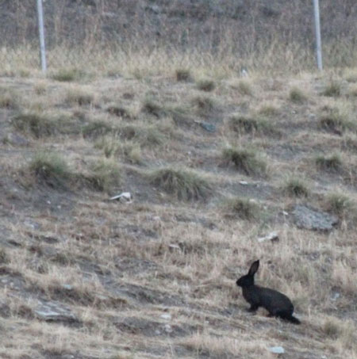 |
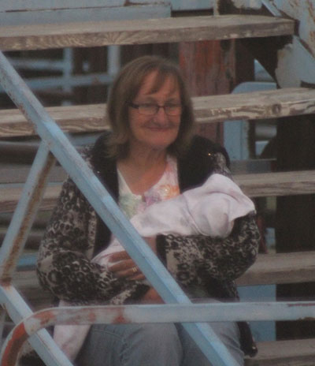 |
| We saw this huge black rabbit heading up the hill and wondered
if he'd escaped from the bunny barn. |
The lovely Irene, treasuring her latest grandchild. |
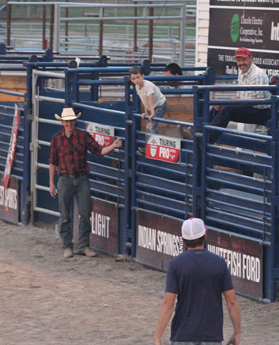 |
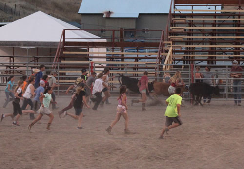 |
| A pack of Eashes - 3 generations here with Eli, Marion,
Grant, and Ora Jay.
|
Next event - get the ribbon off the tail of these cows. In
this event, the cows found a way out of the arena and headed fast for an open gate. Kudos to Marion who sprinted back there, vaulted a fence, and chased them back in - right after doing the wheelbarrow race multiple times. |
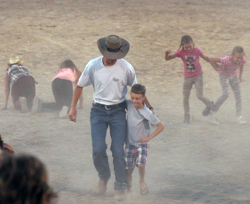 |
|
| The eldest and youngest of the Stark boys, enjoying the three-legged race. | |